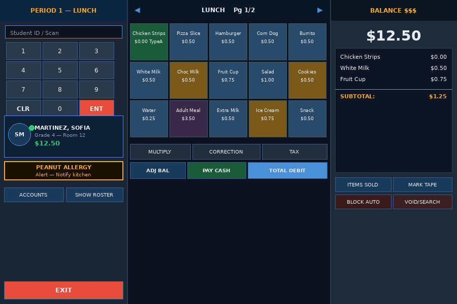
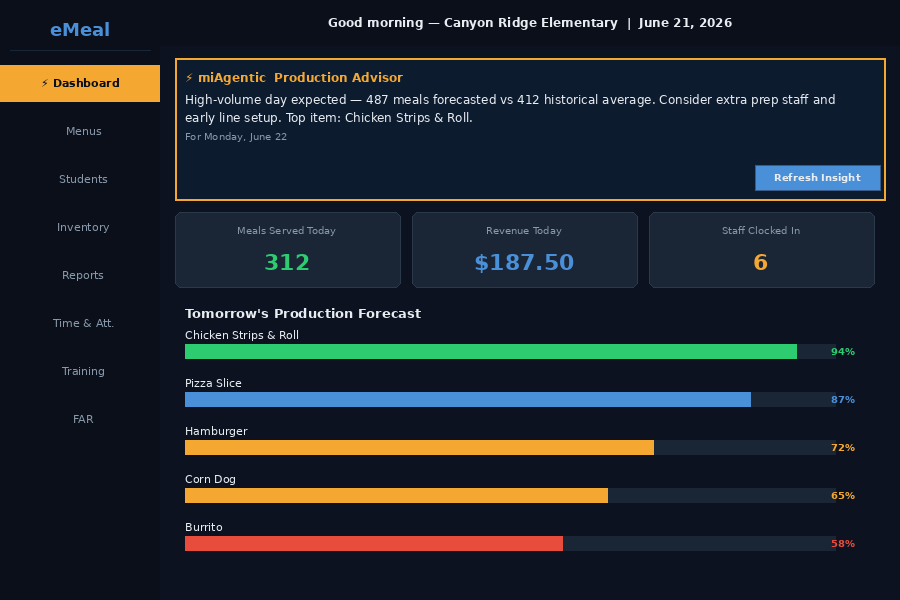
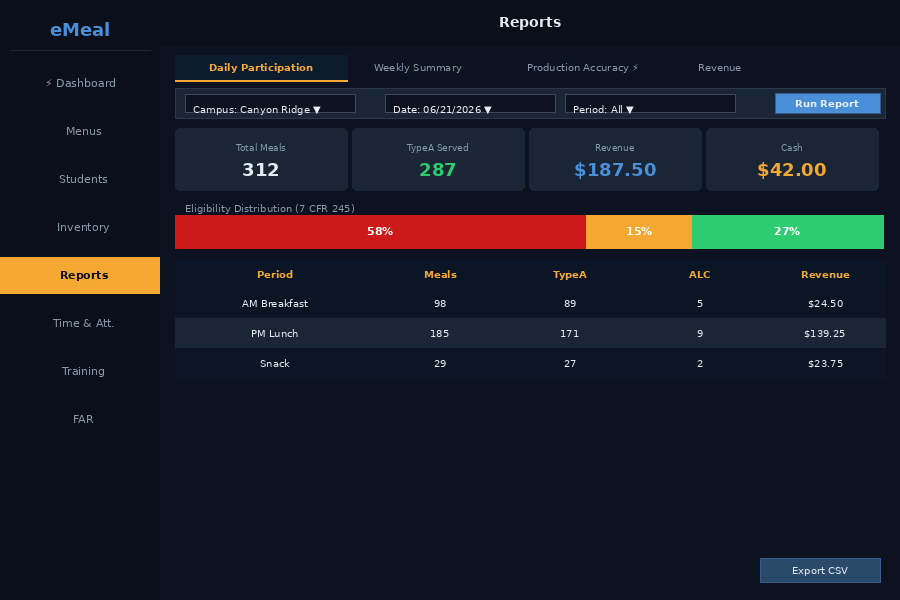

Every module is designed to stand alone or operate as part of a fully integrated district-wide system — all built on a single shared data source, all USDA compliant, all built for the realities of school food service.
eMeal is MiChoice's flagship cafeteria POS — a client/server system that runs on any Windows-based touch screen PC. It handles lunch line throughput, serving line accounting, eligibility status verification, and generates a comprehensive library of child nutrition management reports — all while meeting every applicable government regulation.

COMS-PRO is the data backbone of every MiChoice deployment. It serves the district child nutrition department as a common data source for centralized F&R application processing, district-wide meal accountability, and government reporting. Bi-directional real-time data transfer connects the central office to every cafeteria POS across the district's WAN — automatically.

EZ-Task is the most comprehensive cafeteria inventory tool in K-12 food service. Child nutrition directors can track items, quantities, cost of goods, reorder levels, commodity cross-references, purchasing, and receiving — all with automated reporting that eliminates the hours of manual inventory extension work that used to dominate the end of every period.

ETC transforms any computer — including the cafeteria POS terminal — into a fully functional time clock. Employee time card preparation is automated, gross wages are calculated, and all employee data is maintained in a centralized database. The reporting suite gives directors the real-time workforce data they need to make accurate staffing decisions.
FAR-Apps automates the entire school lunch program eligibility process — from application intake through status determination and POS update. Eligibility status changes propagate in real time to every cafeteria POS across the district. The result: reduced administrative labor, maximum federal funding capture, and a complete audit trail for compliance reviews.
The online F&R application portal allows families to submit eligibility applications digitally — from any device, at any time. Digital submissions flow directly into FAR-Apps for processing, eliminating paper, reducing data entry error, and accelerating the determination timeline. Higher submission rates, lower processing cost, faster funding.
Parents can visit mymealmoney.com to pay their student's meal account using credit or debit card via the district's personalized secure web store. A simple daily import eliminates all manual data entry. Fund accounting reports make reconciliation effortless.
Give parents 24/7 visibility into their student's meal account. Current balance, transaction history, and proactive low-balance alerts — all accessible through a secure online portal. Reduces the volume of front-office balance inquiries while improving the family experience.
MiChoice's suite shares a single data source. Add one module or the entire stack — every piece integrates in real time across your district's network. No manual data transfer. No synchronization delays. One system of record for K-12 child nutrition.
Schedule a Demo Implementation Details